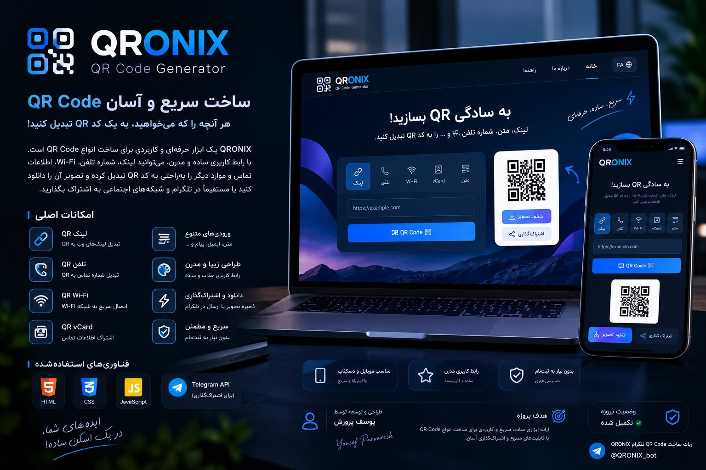
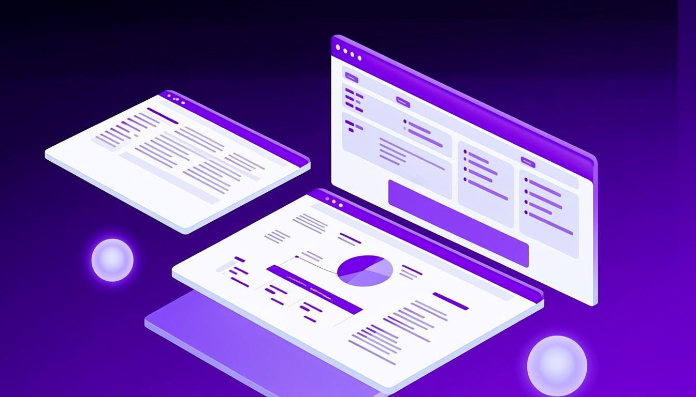
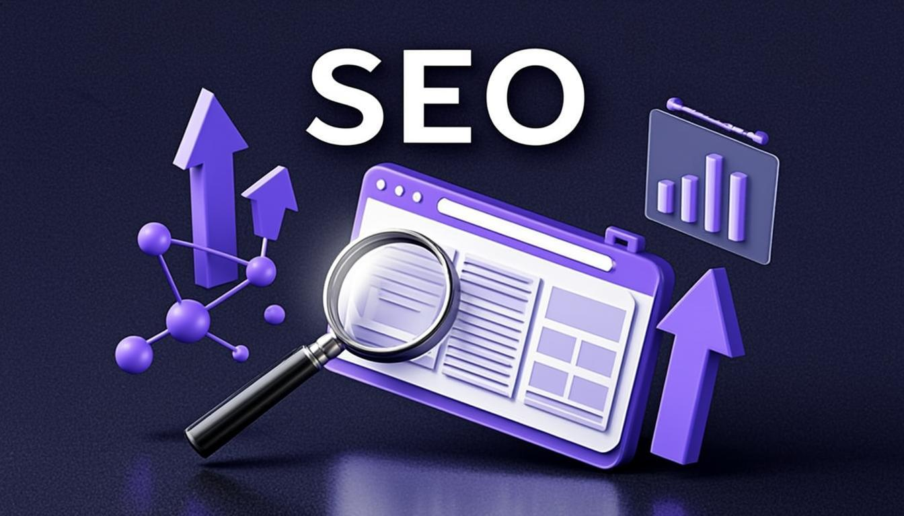

سایت مشاوره تحصیلی سبز اپلای
وبسایت کامل مشاوره تحصیلی با طراحی سبز اختصاصی، کارنامه پذیرشها و فرم رزرو مشاوره.
سلام. من
طراحی که دیده میشود، کدی که کار میکند
من یوسف پرورش هستم؛ طراح سایت و برنامهنویس از شهرستان بیلهسوار، استان اردبیل. تخصص اصلی من طراحی وبسایتهای مدرن با HTML و CSS، برنامهنویسی پایتون و ساخت رباتهای تلگرام است و برای اینکه هر پروژه سریعتر و دقیقتر پیش برود، از ابزارهای هوش مصنوعی کمک میگیرم.
در کنار طراحی سایت و فروشگاه اینترنتی، طراحی لوگو و بنر، ساخت نرمافزار دسکتاپ و انتشار پروژهها روی GitHub Pages را هم انجام میدهم؛ از رفع خطا و اشکالزدایی پروژههای موجود تا ساخت ابزارهای کاربردی مثل وبسایت هواشناسی و مولد QR Code. اگر پروژهای در ذهن دارید، خوشحال میشوم در ساخت آن همراهتان باشم.
روی هر کار کلیک کنید تا جزئیات کامل را ببینید؛ با آیکون ذرهبین میتوانید تصویر را بزرگ کنید
وبسایت کامل مشاوره تحصیلی با طراحی سبز اختصاصی، کارنامه پذیرشها و فرم رزرو مشاوره.

پیشبینی آبوهوای ایران و جهان با AQI، حالت شب و روز و پشتیبانی دوزبانه.

ساخت سریع انواع QR Code؛ لینک، وایفای، تلفن، vCard و متن با دانلود و اشتراکگذاری.

وبسایت آموزش مفاهیم امنیت سایبری با تم تیره و رنگهای آبی نئونی.
از ایده اولیه تا راهاندازی و پشتیبانی، کنار شما هستم
از لندینگ تا سایت چندصفحهای کامل با HTML و CSS و JavaScript؛ ریسپانسیو، سریع و آماده انتشار روی GitHub Pages.
سبد خرید، جستجوی زنده، صفحه جزئیات محصول و فرآیند پرداخت؛ تجربه خریدی که مشتری را برمیگرداند.
ساخت رباتهای کاربردی تلگرام و اتوماسیون گردشکارها با n8n و پایتون؛ ماژولار و قابل توسعه.
ساخت ابزارهای کاربردی وب با کمک AI؛ دقیقاً مثل QRONIX و WeatherPro که در بخش پروژهها میبینید.
لوگوی اختصاصی، ست پست و استوری اینستاگرام و بنرهای تبلیغاتی با تایپوگرافی و پالت رنگی خاص.
اپلیکیشن و نرمافزار دسکتاپ با پایتون، اشکالزدایی دقیق و بهینهسازی پروژههای موجود.
آنچه از دنیای وب و برنامهنویسی آموختهام را اینجا مینویسم

از طراحی سهبعدی و حرکتهای روان تا رابطهای تعاملی؛ ترندهایی که آینده وب را شکل میدهند.
ادامه مطلبمشتری امروز قبل از خرید، شما را در گوگل جستوجو میکند؛ بدون سایت حرفهای، رقیبها جلو میزنند.
ادامه مطلب
از انتخاب کلمه کلیدی تا سرعت سایت؛ هر آنچه برای دیدهشدن در گوگل لازم دارید.
ادامه مطلباز یک لوگوی ساده تا یک فروشگاه کامل؛ بیایید ایده شما را به یک محصول دیجیتال تبدیل کنیم.